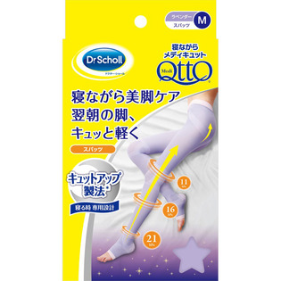

返回列表
产品名称：ドクター・ショール 寝ながらメディキュット スパッツ ラベンダー

レキットベンキーザー・ジャパン ドクター・ショール 寝ながらメディキュット スパッツ ラベンダー Ｍ
メーカー レキットベンキーザー・ジャパン
JANコード 4986803804198
商品の特徴
寝ながら美脚ケア 翌朝の脚、キュッと軽く
キュットアップ製法 寝る時専用設計
成分・分量
ナイロン、ポリエステル、ポリウレタン、キュプラ
用法及び用量
●ソックスをたぐりよせて、つま先を入れます。●足首まで引き上げ、かかとの位置を合わせます。●編み分け部分をひざに合わせ、ひざ裏のしわを伸ばします。●腰まで引き上げ、着用します。